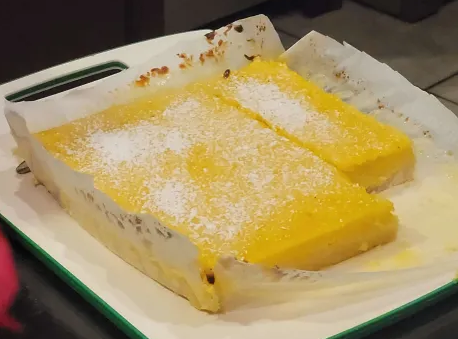

Lemon bars for mom! They did not come our burnt the second time I made them. Hooray! However, I did use a 9x9 pan instead of a 9x13 pan, and it came out too thick.

Equiptment:
9x13 Pan
Food Processor (optional: you can just use a whisk)
Ingredients:
3 cups all-purpose flour 360g, divided 2 1/2 cups for crust and 1/2 cup for filling
2/3 cups powdered sugar 66g, for the shortbread, plus more for dusting
1/2 tsp salt
12 tbsp unsalted butter melted, 170g
3 tbsp lemon zest zest of three lemons
3 cups sugar 600g
8 eggs large, room temperature
1 cup lemon juice fresh, 240mL
Instructions:
Heat oven to 350F and line a 9x13 baking dish with parchment paper.
Whisk together 2 1/2 cups of flour (300g) with the powdered sugar and salt, then pour in the melted butter and mix until combined. You can also do this using a stand mixer with a paddle attachment. If you'd like a dash of vanilla can be added in with the butter at this step.
Sprinkle the dough into your lined pan and press down into a flat layer. Bake at 350F for about 20 minutes or until a light golden color.
While the crust is baking add the sugar to a food processor and add the zest of three lemons. Pulse until the zest is fully incorporated and sugar is a light yellow color. If you don't have a processor just mince the zest and mix with the sugar in a bag or bowl.
Add the sugar and remaining half cup of flour to a large bowl and mix well. You can sift together however and zesty sugar bits will need to get dumped out of the sifter as they might clog things up and not go through.
Pour in the lemon juice and add the eggs then mix very well until completely combined.
Pour the filling onto the warm crust then transfer to oven and bake for about 25 minutes, turning halfway through the bake. Remove from oven and allow to cool for an hour before chilling in the refrigerator for two hours.
Dust with powdered sugar and cut into bars using a clean, sharp, damp knife. Clean and re-wet the knife after each cut.
Notes:
When putting the lemon bars in the oven, remember that the lemon mixture is very liquidy. Don't let it spill!